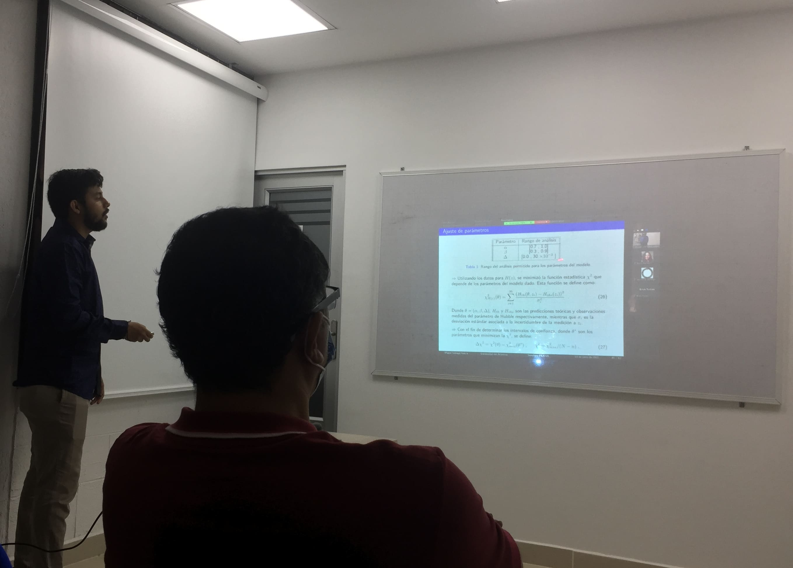

Presentations
Last update May 2024
SCIENTIFIC PRESENTATIONS AND EVENTS
XIV Latin American Symposium on High Energy Physics, Quito

Decoding Holographic Dark Energy in the structure formation, 15/Nov/2022 In this presentation I shared with the scientific community some of my research results from arXiv.2210.13335. The slides can be viewed at SILAFAE.pdf |
|
|
Physicist Day, Universidad del Atlántico


Physicist Day at the Universidad del Atlántico, 4/Nov/2022 In this event I participated as an organizer along with the Physics Department of the Universidad Del Atlántico. Where students from local high schools came to learn about the wonders of this exciting career. |
Physics Colloquium, Universidad del Atlántico

Hubble constant estimation from BAO signals with LSST-simulated data, 27/Sep/2022 In this presentation I shared my results and research experience in the RECA internship program 2022. Record. The slides can be viewed at Colloquium.pdf |

|
RECA Internships 2022 Symposium, Universidad de Antioquia (Online)

Hubble constant estimation from BAO signals with LSST-simulated data, 29/Agu/2022 In this presentation I shared with the scientific community my research results in the RECA 2022 internship program. Video (Spanish). The slides can be viewed at RECA.pdf |
Thesis defense, Universidad del Atlántico
|

Barrow holographic dark energy with Granda–Oliveros cutoff, 13/Jun/2022 In this presentation I made my thesis defense, directed by Prof. Alexander Oliveros. The slides can be viewed at Thesis.pdf |
CoCo 2021: Cosmology in Colombia (Online)
|
Cosmological analysis of Barrow holographic dark energy model considering the Granda-Oliveros infrared cutoff, 8/Sep/2021 In this presentation I shared with the scientific community some of my research results from doi:10.1140/epjp/s13360-022-02994-z. Video (English). The slides can be viewed at COCO.pdf |
XVI National Meeting on Optics and VII Andean and Caribbean Conference on Optics and its applications, Universidad de Córdoba
|
Mobility of localized beams in non-homogeneous photonic lattices, 26/Nov/2019 In this presentation I shared with the scientific community my research from doi:10.1088/1742-6596/1547/1/012023. The slides can be viewed at Optics.pdf |